Pokémon in the NYPL archives
2018-2-10 14:10:07
Magmar @
St. Castorius, St. Quirinus, and St. Chrisogonus, with an Abbot
.
2018-2-10 12:10:04
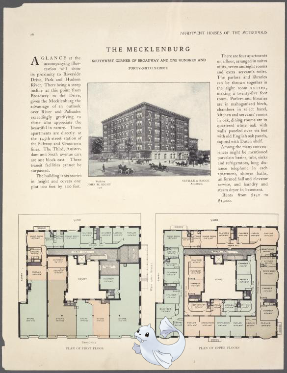
Dewgong @
The Mecklenburg, southwest corner of Broadway and One hundred and forty-sixth Street; Plan of first floor; Plan of upper floors.
!
2018-2-10 10:10:04
Donphan on
S.S. President Wilson
2018-2-10 08:10:04
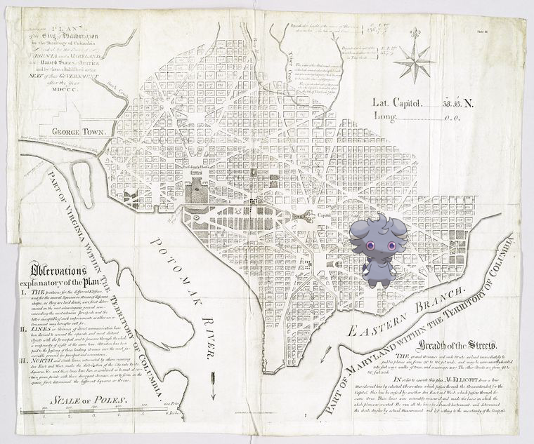
Espurr –
Plan of the city of Washington in the territory of Columbia : ceded by the states of Virginia and Maryland to the United States of America, and by them established as the seat of their government after the year MDCCC
.
2018-2-10 06:10:04
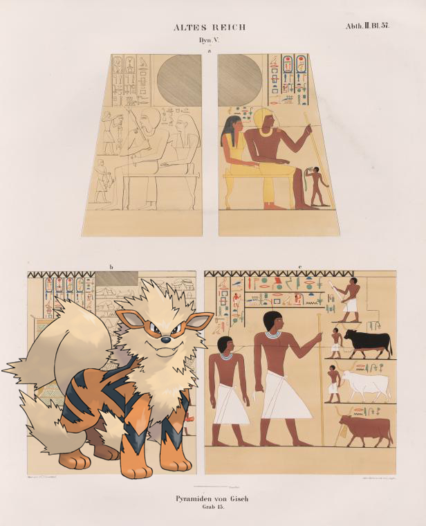
Arcanine @
Dynastie V. Pyramiden von Giseh [Jîzah], Grab 15.
2018-2-10 04:10:04
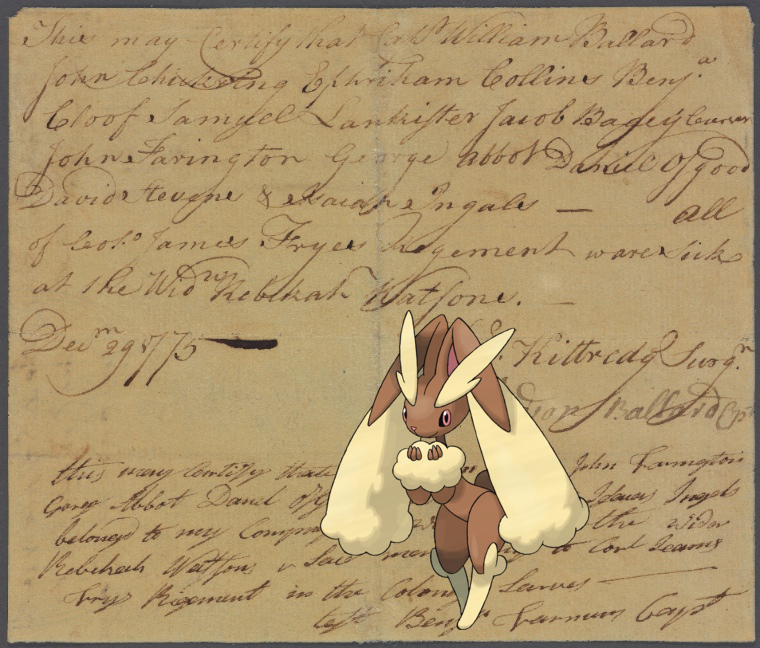
Lopunny |
Document
2018-2-10 02:10:04
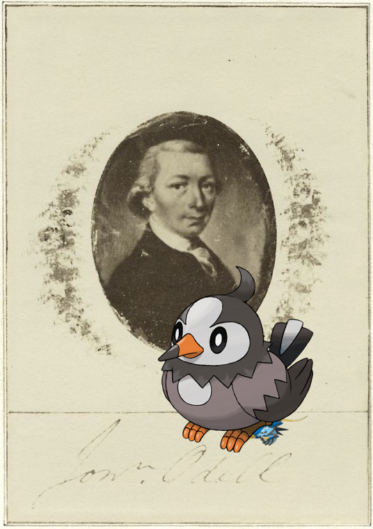
Clawitzer, Starly on
Jona. Odell
!
2018-2-10 00:10:04
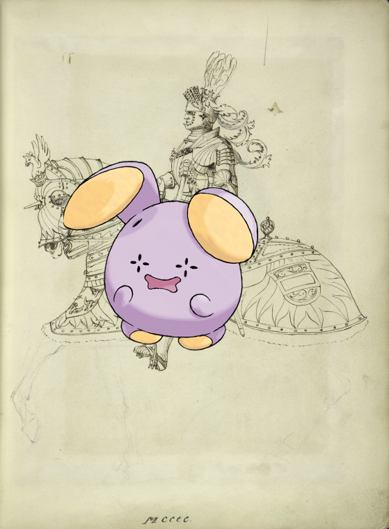
Whismur ;
Knight on horseback, MCCCC.
!
2018-2-9 22:10:04
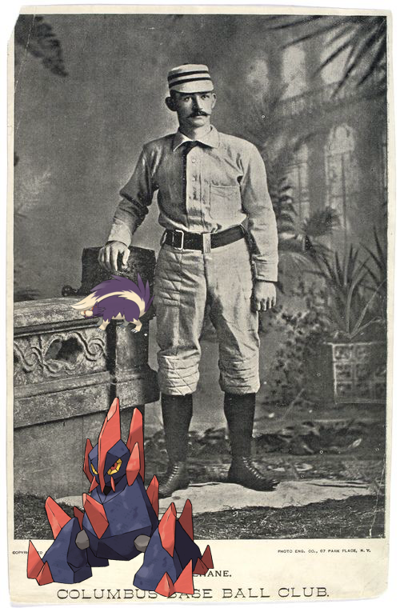
Gigalith, Skuntank +
Mike Lehane, Columbus
2018-2-9 20:10:04
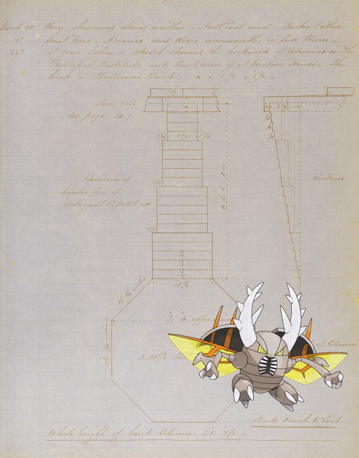
Pinsir on
Elevation of angular face of octogonal capital ; section ; plan top of column.
2018-2-9 18:10:05
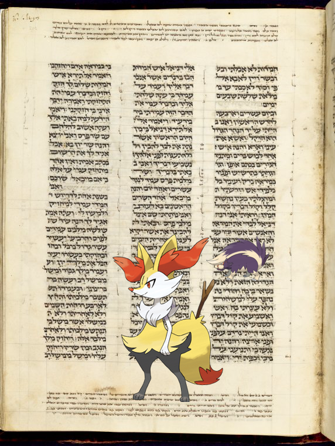
Braixen, Skuntank @
[Xanten Bible.]
2018-2-9 16:10:04
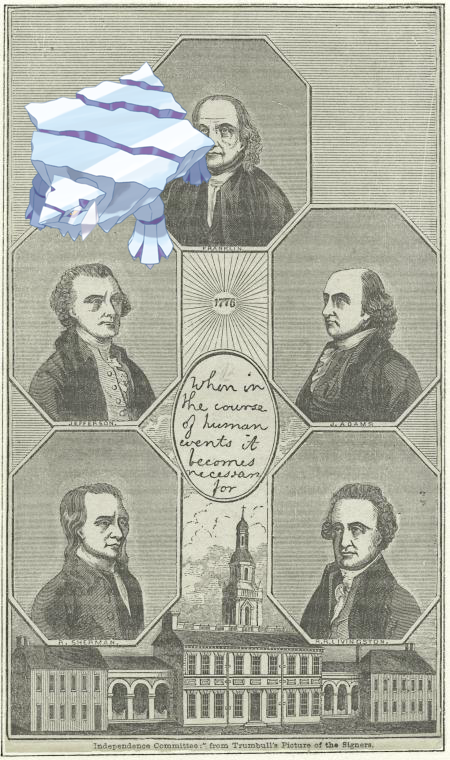
Avalugg +
Portraits of the Independence Committee.
!
2018-2-9 14:10:06
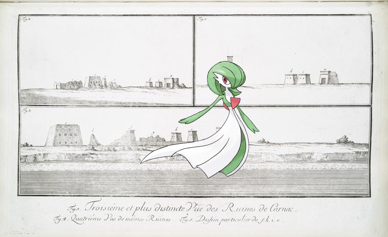
Gardevoir –
Fig. 3. Troisième et plus distincte vue des ruines des Carnac [Karnak]; Fig. 4. Quatrième vue des mêmes ruines; Fig. 5. Dessein particulier de f, h, i, k.
.
2018-2-9 12:10:05
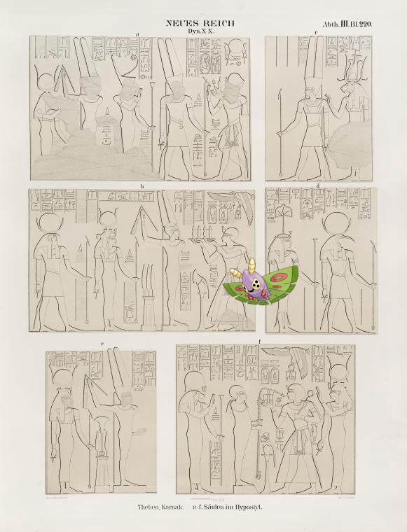
Dustox |
Neues Reich. Dynastie XX. Theben [Thebes], Karnak: a-f. Säulen im Hypostyl.
.
2018-2-9 10:10:08
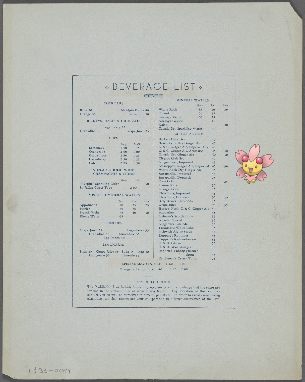
Cherrim +
Hotel McAlpin
2018-2-9 08:10:05
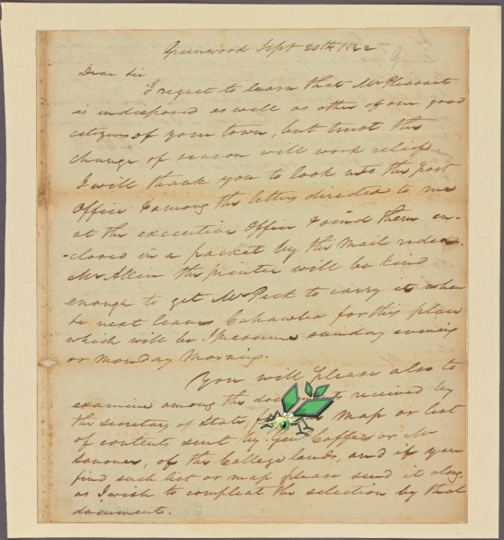
Vibrava ;
Letter to the Secretary of State or in case of his not being in the Ex. Office, Mr G. O. Dick, Esq, Executive Office, Cahawba [Ala.]
!
2018-2-9 06:10:04
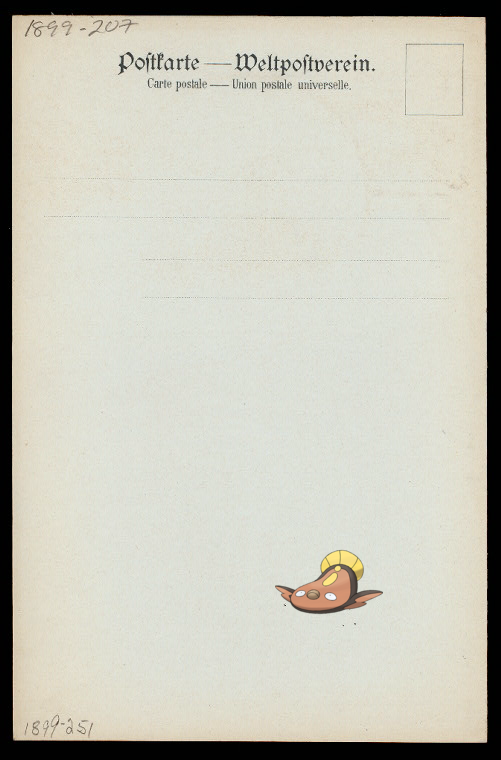
Stunfisk ;
LUNCH [held by] NORDDEUTSCHER LLOYD BREMEN [at] KONIGIN LUISE (SS;)
.
2018-2-9 04:10:05
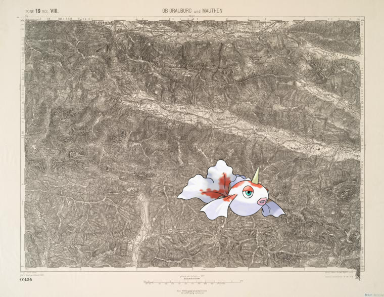
Goldeen |
Db. Drauburg und Mauthen.
.
2018-2-9 02:10:05
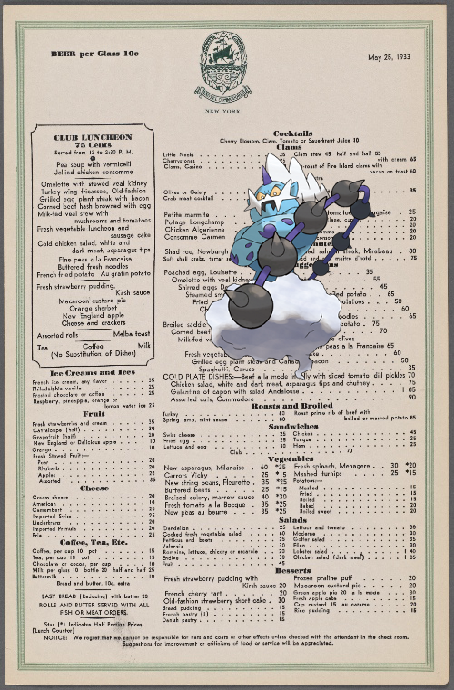
–
The Commodore Hotel
.
2018-2-9 00:10:09
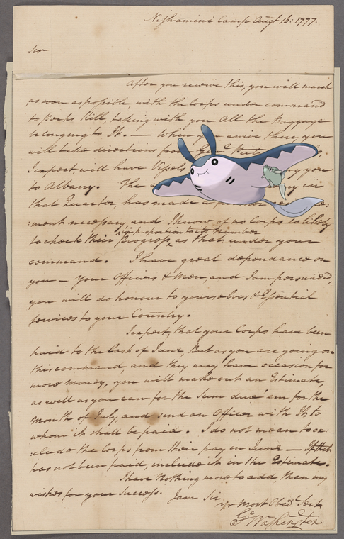
Mantine |
Washington, George. Nishamini Camp. To Colonel Morgan
!
2018-2-8 22:10:10
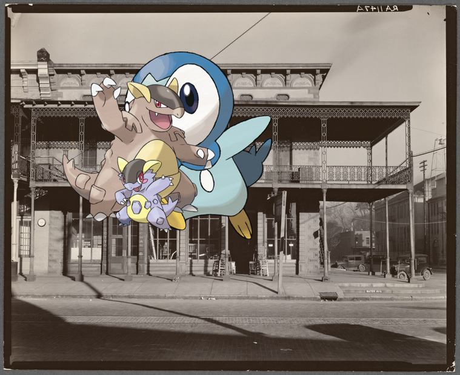
Piplup, Kangaskhan |
Main street architecture. Selma, Alabama
2018-2-8 20:10:06
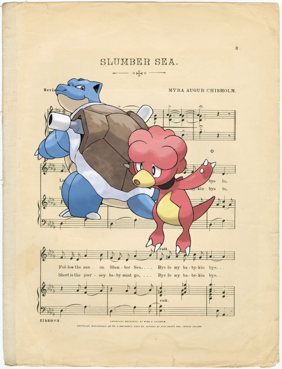
Blastoise, Magby –
Slumber sea
.
2018-2-8 18:10:05
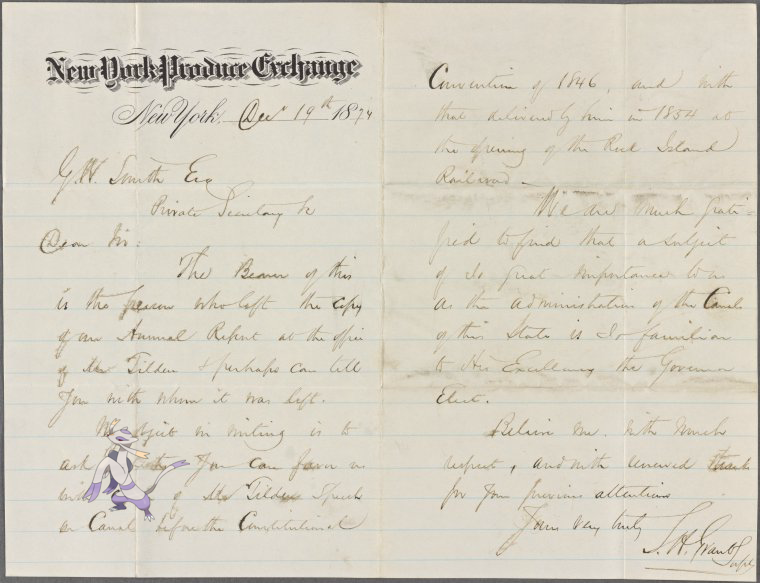
Mienshao on
New York Produce Exchange
2018-2-8 16:10:04
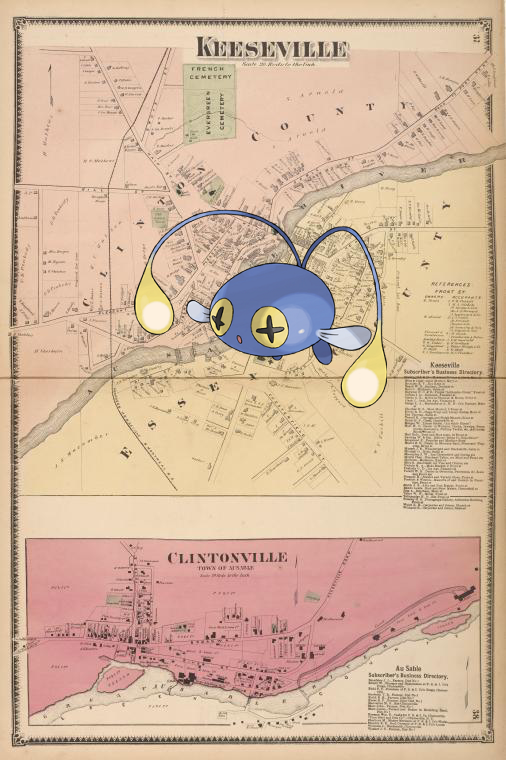
Chinchou +
Keeseville [Village]; Keeseville Subscriber's Business Directory. ; Clintonville [Village]; Au Sable Subscriber's Business Directory.
!
2018-2-8 14:10:05
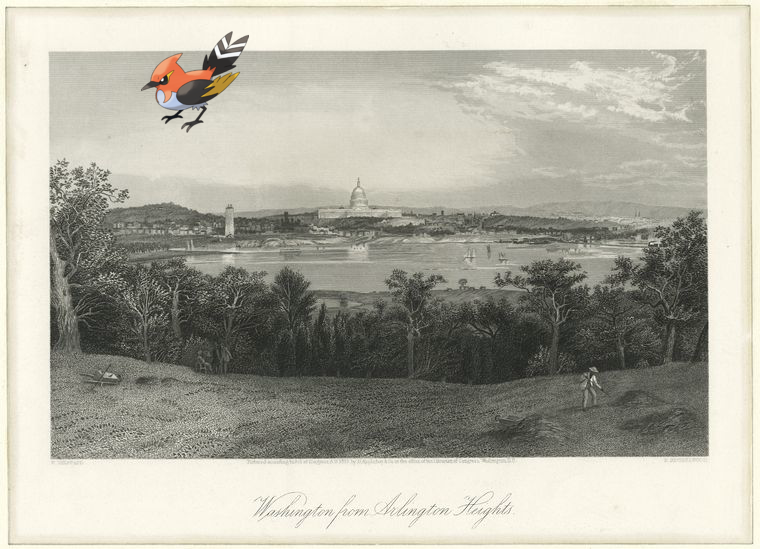
Fletchinder +
Washington from Arlington Heights
!
4
|
3
|
2
|
1
|
0